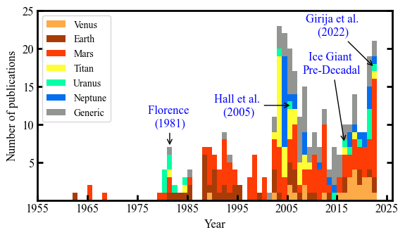
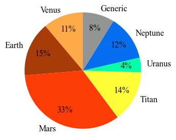

Section 01 - Literature Survey¶
[1]:
import pandas as pd
import numpy as np
from pylab import *
import matplotlib.pyplot as plt
from collections import Counter
[2]:
DATA = pd.read_excel('../../../bibliometric-data/Bibliometric Data - May 27, 2022.xlsx', sheet_name='Sheet1')
years = DATA['Year'].values
origin = DATA['Country of Origin'].values
planet = DATA['Targets'].values
tclass = DATA['Target Class'].values
source = DATA['Journal / Conference / Report'].values
author = DATA['Author Affiliation'].values
sponsor= DATA['Funding Organization'].values
publisher = DATA['Publisher'].values
[3]:
years = DATA['Year'].values
years_ve = years
years_ea = years
years_ma = years
years_ti = years
years_ur = years
years_ne = years
years_ge = years
years_ju = years
years_sa = years
ve_index_to_remove=np.array([0])
ea_index_to_remove=np.array([0])
ma_index_to_remove=np.array([0])
ti_index_to_remove=np.array([0])
ur_index_to_remove=np.array([0])
ne_index_to_remove=np.array([0])
ge_index_to_remove=np.array([0])
ju_index_to_remove=np.array([0])
sa_index_to_remove=np.array([0])
for i in range(0,len(years)):
if tclass[i] != 'Venus':
ve_index_to_remove=np.append(ve_index_to_remove,i)
for i in range(0,len(years)):
if tclass[i] != 'Earth':
ea_index_to_remove=np.append(ea_index_to_remove,i)
for i in range(0,len(years)):
if tclass[i] != 'Mars':
ma_index_to_remove=np.append(ma_index_to_remove,i)
for i in range(0,len(years)):
if tclass[i] != 'Titan':
ti_index_to_remove=np.append(ti_index_to_remove,i)
for i in range(0,len(years)):
if tclass[i] != 'Uranus':
ur_index_to_remove=np.append(ur_index_to_remove,i)
for i in range(0,len(years)):
if tclass[i] != 'Neptune':
ne_index_to_remove=np.append(ne_index_to_remove,i)
for i in range(0,len(years)):
if tclass[i] != 'Generic':
ge_index_to_remove=np.append(ge_index_to_remove,i)
ve_index_to_remove=np.delete(ve_index_to_remove,0)
ea_index_to_remove=np.delete(ea_index_to_remove,0)
ma_index_to_remove=np.delete(ma_index_to_remove,0)
ti_index_to_remove=np.delete(ti_index_to_remove,0)
ur_index_to_remove=np.delete(ur_index_to_remove,0)
ne_index_to_remove=np.delete(ne_index_to_remove,0)
ge_index_to_remove=np.delete(ge_index_to_remove,0)
years_ve = np.delete(years_ve, ve_index_to_remove)
years_ea = np.delete(years_ea, ea_index_to_remove)
years_ma = np.delete(years_ma, ma_index_to_remove)
years_ti = np.delete(years_ti, ti_index_to_remove)
years_ur = np.delete(years_ur, ur_index_to_remove)
years_ne = np.delete(years_ne, ne_index_to_remove)
years_ge = np.delete(years_ge, ge_index_to_remove)
years_st = [years_ve, years_ea, years_ma, years_ti, years_ur, years_ne, years_ge]
fig=plt.figure(figsize=(6.5,3.25))
from matplotlib import rcParams
fig = plt.figure(figsize=(6.5, 3.5))
plt.rc('font',family='Times New Roman')
params = {'mathtext.default': 'regular' }
plt.rcParams.update(params)
colors = ['xkcd:light orange', 'xkcd:rust', 'xkcd:red orange', 'xkcd:sunshine yellow', 'xkcd:bright sea green', 'xkcd:cerulean blue', 'xkcd:grey']
plt.hist(years_st, bins=np.arange(min(years), max(years)+2, 1), stacked=True, label=['Venus', 'Earth', 'Mars','Titan', 'Uranus', 'Neptune', 'Generic'],color=colors)
plt.xlabel('Year', fontsize=12)
plt.ylabel('Number of publications',fontsize=12);
plt.xticks(np.arange(1955, max(years) + 10, 10))
plt.yticks(np.arange(5, 25 + 1, 5))
plt.xticks(fontsize=12)
plt.yticks(fontsize=12)
ax = plt.gca()
ax.tick_params(direction='in')
ax.yaxis.set_ticks_position('both')
plt.annotate("Florence \n(1981)" , xy=(1981.5, 7), xytext=(1981.5, 11), va="center", ha="center", arrowprops=dict(arrowstyle='->, head_width=0.2', facecolor='blue'), fontsize=12,color='blue',bbox=dict(boxstyle='round,pad=0.2', fc='none', ec='none', alpha=0.3))
plt.annotate("Hall et al.\n (2005)" , xy=(2006, 12.5), xytext=(1995,12.5), va="center", ha="center", arrowprops=dict(arrowstyle='->, head_width=0.2', facecolor='blue'), fontsize=12,color='blue',bbox=dict(boxstyle='round,pad=0.2', fc='none', ec='none', alpha=0.3))
plt.annotate("Ice Giant \nPre-Decadal" , xy=(2016.5, 7.5), xytext=(2014,18), va="center", ha="center", arrowprops=dict(arrowstyle='->, head_width=0.2', facecolor='blue'), fontsize=12,color='blue',bbox=dict(boxstyle='round,pad=0.2', fc='none', ec='none', alpha=0.3))
plt.annotate("Girija et al.\n (2022)" , xy=(2022.5, 17.5), xytext=(2014,23), va="center", ha="center", arrowprops=dict(arrowstyle='->, head_width=0.2', facecolor='blue'), fontsize=12,color='blue',bbox=dict(boxstyle='round,pad=0.2', fc='none', ec='none', alpha=0.3))
ax = plt.gca()
ax.tick_params(direction='in')
plt.legend(loc='upper left', fontsize=10)
ax.xaxis.set_tick_params(width=2)
ax.yaxis.set_tick_params(width=2)
ax.tick_params(length=6)
for axis in ['top','bottom','left','right']:
ax.spines[axis].set_linewidth(2)
plt.savefig('../../../data/acta-astronautica/uranus-orbiter-probe/hist-byPlanet-uranus-paper.png',bbox_inches='tight')
plt.savefig('../../../data/acta-astronautica/uranus-orbiter-probe/hist-byPlanet-uranus-paper.pdf', dpi=500,bbox_inches='tight')
plt.savefig('../../../data/acta-astronautica/uranus-orbiter-probe/hist-byPlanet-uranus-paper.eps', dpi=500,bbox_inches='tight')
plt.show()
The PostScript backend does not support transparency; partially transparent artists will be rendered opaque.
<Figure size 650x325 with 0 Axes>

[6]:
v_c = np.sum('Venus' in s for s in planet)
e_c = np.sum('Earth' in s for s in planet)
m_c = np.sum('Mars' in s for s in planet)
t_c = np.sum('Titan' in s for s in planet)
u_c = np.sum('Uranus' in s for s in planet)
n_c = np.sum('Neptune' in s for s in planet)
g_c = np.sum('Generic' in s for s in planet)
sizes = [v_c, e_c, m_c, t_c, u_c, n_c, g_c]
labels = ['Venus', 'Earth', 'Mars', 'Titan', 'Uranus', 'Neptune', 'Generic']
fig=plt.figure(figsize=(3.25,3.25))
plt.rc('font',family='Times New Roman')
params = {'mathtext.default': 'regular' }
plt.rcParams.update(params)
colors = ['xkcd:light orange', 'xkcd:rust', 'xkcd:red orange', 'xkcd:sunshine yellow', 'xkcd:bright sea green', 'xkcd:cerulean blue', 'xkcd:grey']
patches, texts, autotexts = plt.pie(sizes, labels=labels, colors = colors, autopct='%d%%', pctdistance = 0.75, shadow=False, startangle=90, textprops={'fontsize': 12})
plt.axis('equal') # Equal aspect ratio ensures that pie is drawn as a circle.
plt.setp(autotexts, fontsize=12)
plt.setp(texts, fontsize=12)
plt.savefig('../../../data/acta-astronautica/uranus-orbiter-probe/pie-planets-uranus-paper.png',dpi=500, bbox_inches='tight')
plt.savefig('../../../data/acta-astronautica/uranus-orbiter-probe/pie-planets-uranus-paper.pdf', dpi=500,bbox_inches='tight')
plt.savefig('../../../data/acta-astronautica/uranus-orbiter-probe/pie-planets-uranus-paper.eps', dpi=500,bbox_inches='tight')
plt.show()
<ipython-input-6-8732f3755516>:1: DeprecationWarning: Calling np.sum(generator) is deprecated, and in the future will give a different result. Use np.sum(np.fromiter(generator)) or the python sum builtin instead.
v_c = np.sum('Venus' in s for s in planet)
<ipython-input-6-8732f3755516>:2: DeprecationWarning: Calling np.sum(generator) is deprecated, and in the future will give a different result. Use np.sum(np.fromiter(generator)) or the python sum builtin instead.
e_c = np.sum('Earth' in s for s in planet)
<ipython-input-6-8732f3755516>:3: DeprecationWarning: Calling np.sum(generator) is deprecated, and in the future will give a different result. Use np.sum(np.fromiter(generator)) or the python sum builtin instead.
m_c = np.sum('Mars' in s for s in planet)
<ipython-input-6-8732f3755516>:4: DeprecationWarning: Calling np.sum(generator) is deprecated, and in the future will give a different result. Use np.sum(np.fromiter(generator)) or the python sum builtin instead.
t_c = np.sum('Titan' in s for s in planet)
<ipython-input-6-8732f3755516>:5: DeprecationWarning: Calling np.sum(generator) is deprecated, and in the future will give a different result. Use np.sum(np.fromiter(generator)) or the python sum builtin instead.
u_c = np.sum('Uranus' in s for s in planet)
<ipython-input-6-8732f3755516>:6: DeprecationWarning: Calling np.sum(generator) is deprecated, and in the future will give a different result. Use np.sum(np.fromiter(generator)) or the python sum builtin instead.
n_c = np.sum('Neptune' in s for s in planet)
<ipython-input-6-8732f3755516>:7: DeprecationWarning: Calling np.sum(generator) is deprecated, and in the future will give a different result. Use np.sum(np.fromiter(generator)) or the python sum builtin instead.
g_c = np.sum('Generic' in s for s in planet)
